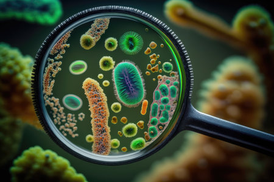

Fisica Nuclear
La física nuclear es una rama de la física que estudia las propiedades, comportamiento e interacciones de los núcleos atómicos. En un contexto más amplio, se define la física nuclear y de partículas como la rama de la física que estudia la estructura fundamental de la materia y las interacciones en entre las partículas subatómicas.
La física nuclear es conocida mayoritariamente por el aprovechamiento de la energía nuclear en centrales nucleares y en el desarrollo de armas nucleares, tanto de fisión nuclear como de fusión nuclear, pero este campo ha dado lugar a aplicaciones en diversos campos, incluyendo medicina nuclear e imágenes por resonancia magnética, ingeniería de implantación de iones en materiales y datación por radiocarbono en geología y arqueología...

Fisica Cuantica
La física cuántica es una rama de la física en la que el proceso de medida no es determinista, esto significa que dados dos sistemas físicos con el mismo estado cuántico, al medir sobre ellos una cierta magnitud no tiene por qué obtenerse el mismo valor...

Fisica Mecanica
La mecánica (en griego, Μηχανική y en latín, mēchanica) o arte de construir una máquina es la rama de la física que estudia y analiza el movimiento y reposo de los cuerpos, y su evolución en el tiempo, bajo la acción de fuerzas.Modernamente la mecánica incluye la evolución de sistemas físicos más generales que los cuerpos másicos. En ese enfoque la mecánica estudia también las ecuaciones de evolución temporal de sistemas físicos como los campos electromagnéticos o los sistemas cuánticos donde propiamente no es correcto hablar de cuerpos físicos...

Fisica Atomica
La física atómica es la rama de la física que estudia las propiedades y el comportamiento de los átomos (electrones y núcleos atómicos) así como las interacciones materia-materia y luz-materia en la escala de átomos individuales...

Quimica Organica
La química orgánica es la rama de la química que estudia la estructura, propiedades y reacciones de los compuestos y materiales orgánicos en sus variadas formas, que en su mayor parte contienen átomos de carbono y una pequeña cantidad de oxígeno, azufre, nitrógeno, halógenos, fósforo y silicio...

Quimica Inorganica
La química inorgánica se encarga del estudio integrado de la formación, composición, estructura y reacciones químicas de los elementos y compuestos inorgánicos (por ejemplo, ácido sulfúrico o carbonato de calcio); es decir, los que no poseen enlaces carbono-hidrógeno, porque estos pertenecen al campo de la química orgánica. Dicha separación no es siempre clara, como por ejemplo en la química organometálica que es una superposición de ambas...

Quimica Analitica
La química analítica estudia y utiliza instrumentos y métodos para separar, identificar y cuantificar la materia.1 En la práctica, la separación, identificación o cuantificación puede constituir el análisis completo o combinarse con otro método. La separación aísla los analitos. El análisis cualitativo identifica los analitos, mientras que el análisis cuantitativo determina la cantidad o concentración numérica...

Quimica Industrial
La química industrial es la rama de la química que aplica los conocimientos químicos a la producción de forma económica de materiales y productos químicos especiales con el mínimo impacto adverso sobre el medio ambiente...

Biologia Marina
La biología marina es la ciencia rama de la biología que estudia la vida marina, lo cual incluye el estudio de la flora, la fauna, la funga y el microbioma propios del mar, así como de las comunidades marinas que estos conforman...
Biologia Botanica
La botánica (del griego βοτάνη, 'hierba') o fitología (del griego φυτόν, 'planta' y λόγος, 'tratado') es la rama de la biología que estudia las plantas, bajo todos sus aspectos, lo cual incluye: descripción, clasificación, distribución, identificación, el estudio de su reproducción, fisiología, morfología, relaciones ...

Biologia Ecologica
La ecología es la rama de la biología que estudia las relaciones de los diferentes seres vivos entre sí y su relación con el entorno: «la biología de los ecosistemas». Estudia cómo estas interacciones entre los organismos y su ambiente afectan a propiedades como la distribución o la abundancia...
Microbiologia
La microbiología es la ciencia encargada del estudio y el análisis de los microorganismos, seres vivos diminutos no visibles al ojo humano (del griego «μικρος» mikros "pequeño", «βιος» bios, "vida" y «-λογία» -logía, tratado, estudio, ciencia), también conocidos como microbios. Se dedica a estudiar los organismos que son solo visibles a través del microscopio: organismos procariotas y eucariotas simples...
